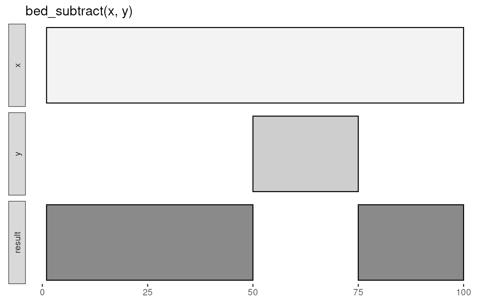

Subtract y intervals from x intervals.
Details
input tbls are grouped by chrom by default, and additional
groups can be added using dplyr::group_by(). For example,
grouping by strand will constrain analyses to the same strand. To
compare opposing strands across two tbls, strands on the y tbl can
first be inverted using flip_strands().
See also
https://bedtools.readthedocs.io/en/latest/content/tools/subtract.html
Other multiple set operations:
bed_closest(),
bed_coverage(),
bed_intersect(),
bed_map(),
bed_window()
Examples
x <- tibble::tribble(
~chrom, ~start, ~end,
"chr1", 1, 100
)
y <- tibble::tribble(
~chrom, ~start, ~end,
"chr1", 50, 75
)
bed_glyph(bed_subtract(x, y))

x <- tibble::tribble(
~chrom, ~start, ~end,
"chr1", 100, 200,
"chr1", 250, 400,
"chr1", 500, 600,
"chr1", 1000, 1200,
"chr1", 1300, 1500
)
y <- tibble::tribble(
~chrom, ~start, ~end,
"chr1", 150, 175,
"chr1", 510, 525,
"chr1", 550, 575,
"chr1", 900, 1050,
"chr1", 1150, 1250,
"chr1", 1299, 1501
)
bed_subtract(x, y)
#> # A tibble: 7 × 3
#> chrom start end
#> <chr> <dbl> <dbl>
#> 1 chr1 100 150
#> 2 chr1 175 200
#> 3 chr1 250 400
#> 4 chr1 500 510
#> 5 chr1 525 550
#> 6 chr1 575 600
#> 7 chr1 1050 1150
bed_subtract(x, y, any = TRUE)
#> # A tibble: 1 × 3
#> chrom start end
#> <chr> <dbl> <dbl>
#> 1 chr1 250 400